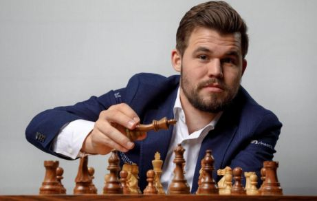
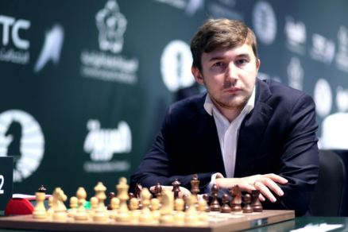

Campeonato Mundial de Ajedrez 2016
El partido por el título de campeón mundial de ajedrez 2016 (el 55º en la historia del ajedrez) se llevó a cabo del 11 al 30 de noviembre de 2016 entre el actual campeón mundial Magnus Carlsen (Noruega) y el retador Sergey Karjakin (Rusia) en Nueva York.
El partido comenzó con siete empates consecutivos antes de que Karjakin ganara la octava partida. Carlsen empató el marcador al ganar la décima partida. Todas las demás partidas terminaron en empate, por lo que después de las primeras 12 partidas el marcador estaba igualado en 6-6, y el destino del título de campeón se decidió en un desempate. Las primeras 2 partidas del desempate terminaron en empate, y Carlsen ganó las dos partidas restantes, manteniendo así el título de campeón mundial de ajedrez.
Participantes
Campeón actual
Magnus Carlsen
26 años
Rating al comienzo del match: 2853
Retador
Sergey Karjakin
26 años
Rating al comienzo del match: 2772
Según las reglas de la FIDE, el campeón mundial en ejercicio debe defender su título en un partido contra el ganador del torneo de contendientes. Magnus Carlsen se convirtió en campeón mundial de ajedrez por primera vez en 2013, al ganar un partido similar contra Viswanathan Anand. Después de eso, en 2014, como campeón mundial, volvió a jugar contra Anand y lo venció nuevamente.
Sergey Karjakin se convirtió en contendiente al título de campeón mundial de ajedrez al ganar el torneo de contendientes, que se llevó a cabo del 10 al 28 de marzo de 2016 en Moscú, donde los ocho mejores jugadores jugaron dos rondas. Karjakin ganó el torneo con 8½ puntos en 14 partidas, superando a Fabiano Caruana y al ex campeón mundial Viswanathan Anand, quienes obtuvieron 7½ puntos cada uno.